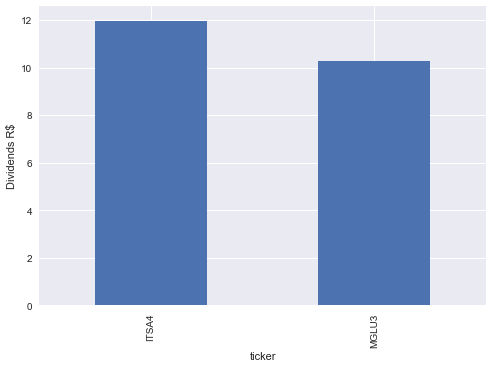
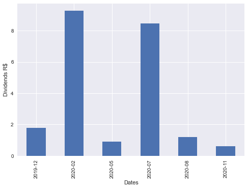
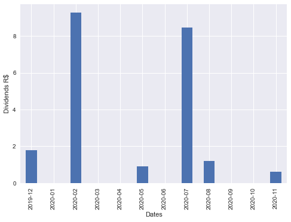
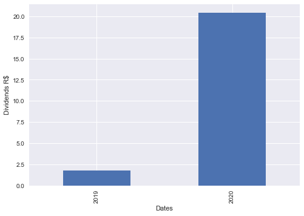
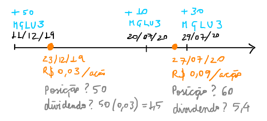
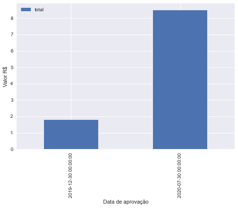

Extrator de dividendos
Objetivo
Dado uma série de trades, saber quanto de dividendo foi recebido até então, separado por valores mensais.
Resultado
Antecipando o resultado do artigo. Se quiser acompanhar a lógica de solução o restante do texto mostra o processo.
Input
trade_data = pd.read_csv('trade_data.csv', sep=';', header=None)
print(trade_data)
0 1 2 3 4
0 20-07-2020 buy MGLU3 10 50,5
1 29-07-2020 buy MGLU3 30 60
2 30-07-2020 sell ITSA4 15 12
3 11-12-2019 buy MGLU3 50 10
4 19-02-2020 buy ITSA4 20 11
5 29-05-2020 buy ITSA4 25 10
Processar as negociações
trades = process_trades(trade_data_file='trade_data.csv')
print(trades)
date type ticker volume price total vol_adj
0 2020-07-20 buy MGLU3 10 50.5 505.0 10
1 2020-07-29 buy MGLU3 30 60.0 1800.0 30
2 2020-07-30 sell ITSA4 15 12.0 -180.0 -15
3 2019-11-12 buy MGLU3 50 10.0 500.0 50
4 2020-02-19 buy ITSA4 20 11.0 220.0 20
5 2020-05-29 buy ITSA4 25 10.0 250.0 25
Consolidação do portfólio
portfolio = consolidate_portfolio(trades)
print(portfolio)
vol_liq avg_price
ticker
ITSA4 30 9.666667
MGLU3 90 31.166667
Proventos recebidos
Formato tabela
dividends = consolidade_dividends(portfolio, trades)
print(dividends)
date_com value type vol_liq total
ticker
379 ITSA4 2020-02-28 0.020000 DIVIDENDO 20 0.400000
382 ITSA4 2020-02-20 0.226000 DIVIDENDO 20 4.520000
383 ITSA4 2020-02-20 0.217400 JRS CAP PROPRIO 20 4.348000
384 ITSA4 2020-05-29 0.020000 DIVIDENDO 45 0.900000
385 ITSA4 2020-08-31 0.020000 DIVIDENDO 30 0.600000
386 ITSA4 2020-11-30 0.020000 DIVIDENDO 30 0.600000
387 ITSA4 2020-08-17 0.020000 DIVIDENDO 30 0.600000
11 MGLU3 2019-12-30 0.035789 JRS CAP PROPRIO 50 1.789458
12 MGLU3 2020-07-30 0.094166 DIVIDENDO 90 8.474937
Por ação
print(dividends.total.groupby('ticker').sum())
(dividends
.groupby('ticker')['total']
.sum()
.plot(
kind='bar',
ylabel='Dividends R$')
)ticker ITSA4 11.968000 MGLU3 10.264395 Name: total, dtype: float64

Por período
(dividends
.groupby(dividends.date_com.dt.to_period('M'))['total']
.sum()
.plot(kind='bar',
xlabel='Dates',
ylabel='Dividends R$')
)
(dividends
.groupby(dividends.date_com.dt.to_period('M'))['total']
.sum() # group by month period and sum
.resample('M') # adds periods without data
.sum()
.plot(kind='bar',
xlabel='Dates',
ylabel='Dividends R$')
)
(dividends
.groupby(dividends.date_com.dt.to_period('Y'))['total']
.sum()
.plot(kind='bar',
xlabel='Dates',
ylabel='Dividends R$')
)
Estratégia global
Portfolio consolidado
Para conseguir o portfolio consolidado:
-
usar um banco banco de dados simples em CSV com data, tipo da ordem (buy, sell ou split), volume negociado e preço de compra médio da ordem. Nomear como
trade_data. -
carregar esse dado e consolidar o saldo atual da posição (considerando vendas, compras e split)
Eventos sociais
Para obter os dividendos e juros sobre capital próprio:
-
usar base de dados da bolsa: bmf-bovespa cia listadas, extrair apenas os dividendos aprovados desde a data de início do portfolio até a data atual. Potencial problema: data de aprovação do dividendo é diferente da data de pagamento de fato.
-
usar o código da cvm para cada companhia: CVM dados cias abertas
Dados sobre as negociações
Vamos iniciar com um portfolio imaginado compra e venda em datas diferentes.
Input
trade_data = pd.read_csv('trade_data.csv', sep=';', header=None)
print(trade_data)
0 1 2 3 4
0 20-07-2020 buy MGLU3 10 50,5
1 29-07-2020 buy MGLU3 30 60
2 30-07-2020 sell ITSA4 15 12
3 11-12-2019 buy MGLU3 50 10
4 19-02-2020 buy ITSA4 20 11
5 29-05-2020 buy ITSA4 25 10
Vamos fazer o seguinte:
-
ler esse csv num dataframe
-
identificar a data conforme o registrado no banco de dados
import pandas as pd
trade_data = pd.read_csv('trade_data.csv', sep=';',
names=['date', 'type', 'ticker', 'volume', 'price'],
decimal=',')
trade_data.date = pd.to_datetime(trade_data.date, format="%d-%m-%Y")
print(trade_data)
print(trade_data.dtypes)
date type ticker volume price
0 2020-07-20 buy MGLU3 10 50.5
1 2020-07-29 buy MGLU3 30 60.0
2 2020-07-30 sell ITSA4 15 12.0
3 2019-12-11 buy MGLU3 50 10.0
4 2020-02-19 buy ITSA4 20 11.0
5 2020-05-29 buy ITSA4 25 10.0
date datetime64[ns]
type object
ticker object
volume int64
price float64
dtype: object
Detalhes sobre as negociações
Criar um dataframe com detalhes das negociações
trades = trade_data.copy()
trades['total'] = trade_data.apply(lambda x: x.price * x.volume
if x.type in ['buy', 'split']
else - x.price * x.volume, axis=1)
trades['vol_adj'] = trade_data.apply(lambda x: x.volume
if x.type in ['buy', 'split']
else
(-x.volume if x.type in ['sell'] else 0), axis=1)
print(trades)
date type ticker volume price total vol_adj
0 2020-07-20 buy MGLU3 10 50.5 505.0 10
1 2020-07-29 buy MGLU3 30 60.0 1800.0 30
2 2020-07-30 sell ITSA4 15 12.0 -180.0 -15
3 2019-12-11 buy MGLU3 50 10.0 500.0 50
4 2020-02-19 buy ITSA4 20 11.0 220.0 20
5 2020-05-29 buy ITSA4 25 10.0 250.0 25
Implementar função que processa as negociações
def process_trades(trade_data_file):
trades = pd.read_csv(trade_data_file, sep=';',
names=['date', 'type',
'ticker', 'volume',
'price'],
decimal=',',
parse_dates=['date'])
# trades.date = pd.to_datetime(trade_data.date, format="%d-%m-%Y")
trades['total'] = trades.apply(lambda x: x.price * x.volume
if x.type in ['buy', 'split']
else - x.price * x.volume, axis=1)
trades['vol_adj'] = trades.apply(lambda x: x.volume
if x.type in ['buy', 'split']
else
(-x.volume if x.type in ['sell'] else 0), axis=1)
return trades
print(process_trades('trade_data.csv'))
date type ticker volume price total vol_adj
0 2020-07-20 buy MGLU3 10 50.5 505.0 10
1 2020-07-29 buy MGLU3 30 60.0 1800.0 30
2 2020-07-30 sell ITSA4 15 12.0 -180.0 -15
3 2019-11-12 buy MGLU3 50 10.0 500.0 50
4 2020-02-19 buy ITSA4 20 11.0 220.0 20
5 2020-05-29 buy ITSA4 25 10.0 250.0 25
Consolidação do portfolio
Na consolidação o objetivo é obter os ativos com volume líquido atuais
Custo médio que você pagou é útil para comparar com preço atual e saber se está ganhando ou perdendo considerando todos os trades.
Desenvolvimento analítico
-
se compra (ou split): volume x preço = total compra
-
se venda: volume x preço = total venda
-
volume líquido: volume compra - volume venda
-
preço médio = (total compra - total venda) / volume líquido
Protótipo
-
groupbypara agrupar e consolidar o portfolio -
dividir total pelo volume líquido para cada ticker
portfolio = pd.DataFrame()
portfolio['vol_liq'] = trades.groupby('ticker')['vol_adj'].sum()
portfolio['avg_price'] = trades.groupby('ticker')['total'].sum() / portfolio.vol_liq
print(portfolio)
vol_liq avg_price
ticker
ITSA4 30 9.666667
MGLU3 90 31.166667
E se o volume líquido for zero, precisamos descartar essa linha usando um filtro no data frame.
print(portfolio[portfolio.vol_liq != 0])
vol_liq avg_price
ticker
ITSA4 30 9.666667
MGLU3 90 31.166667
Implementar uma função de consolidação
def consolidate_portfolio(trades):
portfolio = pd.DataFrame()
portfolio['vol_liq'] = (trades
.groupby('ticker')['vol_adj']
.sum())
portfolio['avg_price'] = (trades
.groupby('ticker')['total']
.sum() / portfolio.vol_liq)
portfolio = portfolio[portfolio.vol_liq != 0]
portfolio.to_csv('portfolio.csv')
return portfolio
print(consolidate_portfolio(trades))
vol_liq avg_price
ticker
ITSA4 30 9.666667
MGLU3 90 31.166667
Código CVM das empresas
Esses dados são baixados da própria CVM.
A engine=c não capta alguns formatos, usando engine = 'python' capta.
cia_data_cvm = pd.read_csv('cad_cia_aberta.csv', sep=';', engine='python')
print(cia_data_cvm.tail())
print(cia_data_cvm.columns)
CNPJ_CIA DENOM_SOCIAL \
2300 02.363.918/0001-20 ZAIN PARTICIPAÇÕES S/A
2301 71.320.931/0001-15 ZANINI SA EQUIPS PESADOS
2302 24.744.012/0001-99 ZH OPERAÇÕES S/A
2303 92.749.217/0001-17 ZIVI SA CUTELARIA
2304 74.533.787/0001-93 ZOGBI LEASING S/A ARRENDAMENTO MERCANTIL
DENOM_COMERC DT_REG DT_CONST DT_CANCEL \
2300 ZAIN PARTICIPAÇÕES S/A 1998-06-15 1998-01-19 2020-08-14
2301 ZANINI 1971-07-05 NaN 1997-01-27
2302 ZH OPERAÇÕES S/A 2016-09-16 2016-04-15 2017-08-07
2303 ZIVI S/A 1968-11-01 1931-01-01 2003-12-29
2304 ZOGBI LEASING 1997-09-18 1993-06-18 2004-12-23
MOTIVO_CANCEL SIT DT_INI_SIT \
2300 ELISÃO POR EXTINÇÃO DA CIA CANCELADA 2020-08-14
2301 ATENDIMENTO AS NORMAS DA INSTR CVM 03/78 CANCELADA 1997-01-27
2302 Cancelamento de ofício - IN CVM 480/09 CANCELADA 2017-08-07
2303 ELISÃO POR INCORPORAÇÃO CANCELADA 2003-12-29
2304 ATENDIMENTO AS NORMAS DA INSTRUÇÃO CVM Nº 361/02 CANCELADA 2004-12-23
CD_CVM ... UF_RESP PAIS_RESP CEP_RESP DDD_TEL_RESP TEL_RESP \
2300 17361 ... RJ NaN 22440033.0 21 21967200.0
2301 11835 ... SP NaN 1013000.0 11 6424066.0
2302 24007 ... SP NaN 4609005.0 011 50548989.0
2303 11843 ... RS NaN 91030530.0 51 33585109.0
2304 16462 ... NaN NaN 6029900.0 11 36814011.0
DDD_FAX_RESP FAX_RESP EMAIL_RESP \
2300 21.0 21967201.0 apsis.rj@apsis.com.br
2301 11.0 NaN NaN
2302 NaN NaN renno@setaatacadista.com.br
2303 51.0 33585176.0 michael.ceitlin@gem.ind.br
2304 11.0 36844630.0 4000.isola@bradesco.com.br
CNPJ_AUDITOR AUDITOR
2300 00.326.016/0001-99 TERCO AUDITORES INDEPENDENTES - SOCIEDADE SIMPLES
2301 61.562.112/0001-20 PRICEWATERHOUSECOOPERS AUDITORES INDEPENDENTES
2302 00.115.909/0001-95 MS AUDITORES INDEPENDENTES S/C
2303 61.562.112/0001-20 PRICEWATERHOUSECOOPERS AUDITORES INDEPENDENTES
2304 57.755.217/0001-29 KPMG AUDITORES INDEPENDENTES
[5 rows x 46 columns]
Index(['CNPJ_CIA', 'DENOM_SOCIAL', 'DENOM_COMERC', 'DT_REG', 'DT_CONST',
'DT_CANCEL', 'MOTIVO_CANCEL', 'SIT', 'DT_INI_SIT', 'CD_CVM',
'SETOR_ATIV', 'TP_MERC', 'CATEG_REG', 'DT_INI_CATEG', 'SIT_EMISSOR',
'DT_INI_SIT_EMISSOR', 'TP_ENDER', 'LOGRADOURO', 'COMPL', 'BAIRRO',
'MUN', 'UF', 'PAIS', 'CEP', 'DDD_TEL', 'TEL', 'DDD_FAX', 'FAX', 'EMAIL',
'TP_RESP', 'RESP', 'DT_INI_RESP', 'LOGRADOURO_RESP', 'COMPL_RESP',
'BAIRRO_RESP', 'MUN_RESP', 'UF_RESP', 'PAIS_RESP', 'CEP_RESP',
'DDD_TEL_RESP', 'TEL_RESP', 'DDD_FAX_RESP', 'FAX_RESP', 'EMAIL_RESP',
'CNPJ_AUDITOR', 'AUDITOR'],
dtype='object')
Limitar o escopo do dataframe só ao que interessa. No final acessamos o código CVM com o CNPJ da empresa.
cia_code_cvm = cia_data_cvm[['CNPJ_CIA', 'DENOM_SOCIAL', 'CD_CVM']]
print(cia_code_cvm)
print(cia_code_cvm.dtypes)
CNPJ_CIA DENOM_SOCIAL \
0 08.773.135/0001-00 2W ENERGIA S.A.
1 11.396.633/0001-87 3A COMPANHIA SECURITIZADORA
2 12.091.809/0001-55 3R PETROLEUM OLÉO E GÁS S.A.
3 01.547.749/0001-16 521 PARTICIPAÇOES S.A. - EM LIQUIDAÇÃO EXTRAJU...
4 01.851.771/0001-55 524 PARTICIPAÇOES SA
... ... ...
2300 02.363.918/0001-20 ZAIN PARTICIPAÇÕES S/A
2301 71.320.931/0001-15 ZANINI SA EQUIPS PESADOS
2302 24.744.012/0001-99 ZH OPERAÇÕES S/A
2303 92.749.217/0001-17 ZIVI SA CUTELARIA
2304 74.533.787/0001-93 ZOGBI LEASING S/A ARRENDAMENTO MERCANTIL
CD_CVM
0 25224
1 21954
2 25291
3 16330
4 16284
... ...
2300 17361
2301 11835
2302 24007
2303 11843
2304 16462
[2305 rows x 3 columns]
CNPJ_CIA object
DENOM_SOCIAL object
CD_CVM int64
dtype: object
CNPJ das empresa
Para obter o cnpj associado a cada ticker usarei os dados desse site: https://www.infomoney.com.br/minhas-financas/confira-o-cnpj-das-acoes-negociadas-em-bolsa-e-saiba-como-declarar-no-imposto-de-renda/
url = 'https://www.infomoney.com.br/minhas-financas/confira-o-cnpj-das-acoes-negociadas-em-bolsa-e-saiba-como-declarar-no-imposto-de-renda/'
cia_cnpj = pd.read_html(url)[0]
print(cia_cnpj.head())
print(cia_cnpj.dtypes)
cia_cnpj.to_csv('cia_cnpj.csv') # save to csv to avoid external dependency
Nome de Pregão Razão Social \
0 ADVANCED-DH ADVANCED DIGITAL HEALTH MEDICINA PREVENTIVA S.A.
1 AES TIETE E AES TIETE ENERGIA SA
2 AFLUENTE T AFLUENTE TRANSMISSÃO DE ENERGIA ELÉTRICA S/A
3 ALEF S/A ALEF S.A.
4 ALFA HOLDING ALFA HOLDINGS S.A.
CNPJ Código
0 10.345.009/0001-98 ADHM1, ADHM3
1 04.128.563/0001-10 TIET11, TIET3, TIET4
2 10.338.320/0001-00 AFLT3
3 02.217.319/0001-07 ALEF3B
4 17.167.396/0001-69 RPAD3, RPAD5, RPAD6
Nome de Pregão object
Razão Social object
CNPJ object
Código object
dtype: object
Portfolio com detalhes das companhias
Estratégia
-
usar o ticker das cias no portfolio consolidado para extrair o CNPJ
-
usar o CNPJ para extrair o código cvm
Protótipo
Obter o CNPJ das cias no portfolio, usando método isin().
Esse método testa se elementos na série está contido na lista passada como parâmetro.
print(portfolio.index.to_list())
print(cia_cnpj[cia_cnpj['Código'].isin(['MGLU3', 'TIET3', 'AFLT3', 'ITSA3'])])
['ITSA4', 'MGLU3']
Nome de Pregão Razão Social \
2 AFLUENTE T AFLUENTE TRANSMISSÃO DE ENERGIA ELÉTRICA S/A
260 MAGAZ LUIZA MAGAZINE LUIZA S.A.
CNPJ Código
2 10.338.320/0001-00 AFLT3
260 47.960.950/0001-21 MGLU3
Se a cia tem mais de um ticker, fica mais complicado a pesquisa. Nesse caso é o uma string apenas.
print(cia_cnpj['Código'][0])
print(type(cia_cnpj['Código'][0]))ADHM1, ADHM3 <class 'str'>
Podemos tentar usar o método str.contains(),
print(cia_cnpj[cia_cnpj['Código'].str.contains('ADHM1')])
Nome de Pregão Razão Social \
0 ADVANCED-DH ADVANCED DIGITAL HEALTH MEDICINA PREVENTIVA S.A.
CNPJ Código
0 10.345.009/0001-98 ADHM1, ADHM3
Mais de uma busca usando |,
print(cia_cnpj[cia_cnpj['Código'].str.contains('ADHM1|ITSA4|MGLU3')])
Nome de Pregão Razão Social \
0 ADVANCED-DH ADVANCED DIGITAL HEALTH MEDICINA PREVENTIVA S.A.
232 ITAUSA ITAUSA INVESTIMENTOS ITAU S.A.
260 MAGAZ LUIZA MAGAZINE LUIZA S.A.
CNPJ Código
0 10.345.009/0001-98 ADHM1, ADHM3
232 61.532.644/0001-15 ITSA3, ITSA4
260 47.960.950/0001-21 MGLU3
mas para passar uma lista de strings para essa função não funciona direto.
precisamos usar o método join().
print(cia_cnpj[cia_cnpj['Código'].str.contains('|'.join(['ADHM1', 'ITSA4', 'MGLU3']))])
Nome de Pregão Razão Social \
0 ADVANCED-DH ADVANCED DIGITAL HEALTH MEDICINA PREVENTIVA S.A.
232 ITAUSA ITAUSA INVESTIMENTOS ITAU S.A.
260 MAGAZ LUIZA MAGAZINE LUIZA S.A.
CNPJ Código
0 10.345.009/0001-98 ADHM1, ADHM3
232 61.532.644/0001-15 ITSA3, ITSA4
260 47.960.950/0001-21 MGLU3
Isso funciona bem.
print(portfolio.index)
print(cia_cnpj.CNPJ[cia_cnpj['Código'].str.contains('|'.join(portfolio.index))].values)
portfolio['cnpj'] = cia_cnpj.CNPJ[cia_cnpj['Código'].str.contains('|'.join(portfolio.index))].values
print(portfolio)
Index(['ITSA4', 'MGLU3'], dtype='object', name='ticker')
['61.532.644/0001-15' '47.960.950/0001-21']
vol_liq avg_price cnpj
ticker
ITSA4 30 9.666667 61.532.644/0001-15
MGLU3 90 31.166667 47.960.950/0001-21
Agora, pegar o código CVM com esse CNPJ. Usarei a mesma técnica.
print(cia_code_cvm[cia_code_cvm['CNPJ_CIA'].str.contains("|".join(portfolio.cnpj))])
portfolio['cd_cvm'] = cia_code_cvm.CD_CVM[cia_code_cvm['CNPJ_CIA'].str.contains("|".join(portfolio.cnpj))].values
print(portfolio)
CNPJ_CIA DENOM_SOCIAL CD_CVM
1319 61.532.644/0001-15 ITAUSA S.A. 7617
1436 47.960.950/0001-21 MAGAZINE LUIZA SA 22470
vol_liq avg_price cnpj cd_cvm
ticker
ITSA4 30 9.666667 61.532.644/0001-15 7617
MGLU3 90 31.166667 47.960.950/0001-21 22470
Implementar função que obtém detalhes das companhias
def get_cia_details(portfolio, cad_cia_file, cia_cnpj_file):
cia_data_cvm = pd.read_csv(cad_cia_file,
sep=';', engine='python')
cia_cnpj = pd.read_csv(cia_cnpj_file, sep=',')
pf_detail = portfolio.copy()
pf_detail['cnpj'] = (cia_cnpj
.CNPJ[
cia_cnpj['Código']
.str.contains('|'.join(portfolio.index.to_list()))
].values)
pf_detail['cd_cvm'] = (cia_data_cvm
.CD_CVM[
cia_data_cvm['CNPJ_CIA']
.str.contains("|".join(pf_detail.cnpj))
].values)
return pf_detail
pf_detail = get_cia_details(portfolio,
cad_cia_file='cad_cia_aberta.csv',
cia_cnpj_file='cia_cnpj.csv')
print(pf_detail)
vol_liq avg_price cnpj cd_cvm
ticker
ITSA4 30 9.666667 61.532.644/0001-15 7617
MGLU3 90 31.166667 47.960.950/0001-21 22470
Um rápido teste no site para confirmar o código.
Proventos de cada companhia
Estratégia
Aqui estou com dúvida se uso 1 dataframe para o provento de todas as companhias ou separo eles, 1 dataframe para cada empresa. Acredito que separado fica mais organizado.
-
usar o código CVM das ações no portfólio e obter um dataframe com os dados dos dividendos dessa ação, colocar num dictionary com key o ticker da ação e value o dataframe.
-
usar o dados de trade para saber quantas ações tinha na data da aprovação do dividendo
Colocar os dados do site num dataframe
Considerar primeiro apenas para MGLU3. Quando for fazer para cada companhia do portfólio consolidado será necessário um loop.
cd_cvm = pf_detail.cd_cvm['MGLU3']
site = f'http://bvmf.bmfbovespa.com.br/cias-listadas/empresas-listadas/ResumoProventosDinheiro.aspx?codigoCvm={cd_cvm}&tab=3.1&idioma=pt-br'
proventos_data = pd.read_html(site, decimal=',', thousands='.')[0]
print(proventos_data.head())
print(proventos_data.dtypes)Tipo de Ativo Data da Aprovação (I) Valor do Provento (R$) \ 0 ON 30/04/2012 0.014857 1 ON 30/01/2014 0.065683 2 ON 17/04/2014 0.107359 3 ON 30/12/2014 0.078168 4 ON 27/04/2015 0.109472 Proventos por unidade ou mil Tipo do Provento (II) Últ. Dia 'Com' \ 0 1 DIVIDENDO 30/04/2012 1 1 JRS CAP PROPRIO 20/02/2014 2 1 DIVIDENDO 22/04/2014 3 1 JRS CAP PROPRIO 14/01/2015 4 1 DIVIDENDO 27/04/2015 Data do Últ. Preço 'Com' (III) Últ. Preço 'Com' Preço por unidade ou mil \ 0 30/04/2012 11.38 1 1 20/02/2014 7.26 1 2 22/04/2014 7.15 1 3 14/01/2015 7.35 1 4 27/04/2015 5.22 1 Provento/Preço(%) 0 0.130554 1 0.904730 2 1.501520 3 1.063508 4 2.097156 Tipo de Ativo object Data da Aprovação (I) object Valor do Provento (R$) float64 Proventos por unidade ou mil int64 Tipo do Provento (II) object Últ. Dia 'Com' object Data do Últ. Preço 'Com' (III) object Últ. Preço 'Com' float64 Preço por unidade ou mil int64 Provento/Preço(%) float64 dtype: object
Converter a data para o formato reconhecível
proventos = {}
proventos['MGLU3'] = pd.DataFrame()
proventos['MGLU3']['valor'] = proventos_data['Valor do Provento (R$)']
proventos['MGLU3']['date_com'] = pd.to_datetime(proventos_data["Últ. Dia 'Com'"],
format="%d/%m/%Y")
print(proventos['MGLU3'])
print(proventos['MGLU3'].dtypes)
valor date_com
0 0.014857 2012-04-30
1 0.065683 2014-02-20
2 0.107359 2014-04-22
3 0.078168 2015-01-14
4 0.109472 2015-04-27
5 1.017261 2017-04-25
6 0.396103 2017-12-19
7 0.264465 2018-04-16
8 0.592705 2018-12-28
9 0.370260 2019-04-15
10 0.073607 2019-10-07
11 0.035789 2019-12-30
12 0.094166 2020-07-30
valor float64
date_com datetime64[ns]
dtype: object
Descartar dados desnecessários
Os proventos serão provisionados apenas quem possuía os papéis na data da aprovação. Portanto, proventos antes da primeira compra não precisam ser armazenados.
print(trades.date[trades.ticker == 'MGLU3'].min())
print(proventos['MGLU3'])
print(proventos['MGLU3'][proventos['MGLU3'].date_com > trades.date[trades.ticker == 'MGLU3'].min()])
proventos['MGLU3'] = proventos['MGLU3'][
proventos['MGLU3'].date_com > trades.date[trades.ticker == 'MGLU3'].min()
]
print(proventos)
2019-12-11 00:00:00
valor date_com
0 0.014857 2012-04-30
1 0.065683 2014-02-20
2 0.107359 2014-04-22
3 0.078168 2015-01-14
4 0.109472 2015-04-27
5 1.017261 2017-04-25
6 0.396103 2017-12-19
7 0.264465 2018-04-16
8 0.592705 2018-12-28
9 0.370260 2019-04-15
10 0.073607 2019-10-07
11 0.035789 2019-12-30
12 0.094166 2020-07-30
valor date_com
11 0.035789 2019-12-30
12 0.094166 2020-07-30
{'MGLU3': valor date_com
11 0.035789 2019-12-30
12 0.094166 2020-07-30}
Considerações sobre ON e PN
Se o ticker contiver 3 é ON e se contiver 4 é PN.
Implementar função que obtém os dados dos proventos
Função faz
-
extrai os dados com base no url da BMF/BOVESPA
-
nomeia a coluna de data
'date_com'e processa ela adequadamente
def get_dividends_data(ticker, cd_cvm):
site = f'http://bvmf.bmfbovespa.com.br/cias-listadas/empresas-listadas/ResumoProventosDinheiro.aspx?codigoCvm={cd_cvm}&tab=3.1&idioma=pt-br'
dividends_data = pd.read_html(site,
decimal=',',
thousands='.',
parse_dates={'date_com':["Últ. Dia 'Com'"]}
)[0]
return dividends_data
print(get_dividends_data('MGLU3', 22470).head())
print(get_dividends_data('MGLU3', 22470).dtypes)
date_com Tipo de Ativo Data da Aprovação (I) Valor do Provento (R$) \
0 2012-04-30 ON 30/04/2012 0.014857
1 2014-02-20 ON 30/01/2014 0.065683
2 2014-04-22 ON 17/04/2014 0.107359
3 2015-01-14 ON 30/12/2014 0.078168
4 2015-04-27 ON 27/04/2015 0.109472
Proventos por unidade ou mil Tipo do Provento (II) \
0 1 DIVIDENDO
1 1 JRS CAP PROPRIO
2 1 DIVIDENDO
3 1 JRS CAP PROPRIO
4 1 DIVIDENDO
Data do Últ. Preço 'Com' (III) Últ. Preço 'Com' Preço por unidade ou mil \
0 30/04/2012 11.38 1
1 20/02/2014 7.26 1
2 22/04/2014 7.15 1
3 14/01/2015 7.35 1
4 27/04/2015 5.22 1
Provento/Preço(%)
0 0.130554
1 0.904730
2 1.501520
3 1.063508
4 2.097156
date_com datetime64[ns]
Tipo de Ativo object
Data da Aprovação (I) object
Valor do Provento (R$) float64
Proventos por unidade ou mil int64
Tipo do Provento (II) object
Data do Últ. Preço 'Com' (III) object
Últ. Preço 'Com' float64
Preço por unidade ou mil int64
Provento/Preço(%) float64
dtype: object
Provento recebido
Para cada provento aprovado, precisamos saber quantas ações constam nessa data.
Protótipo
Obter volume líquido na data do provento.
print(proventos['MGLU3'].date_com.tail(1))
print(trades)
print(trades.vol_adj[(trades.date <= proventos['MGLU3'].date_com[12])
& (trades.ticker == 'MGLU3')].sum())
12 2020-07-30
Name: date_com, dtype: datetime64[ns]
date type ticker volume price total vol_adj
0 2020-07-20 buy MGLU3 10 50.5 505.0 10
1 2020-07-29 buy MGLU3 30 60.0 1800.0 30
2 2020-07-30 sell ITSA4 15 12.0 -180.0 -15
3 2019-12-11 buy MGLU3 50 10.0 500.0 50
4 2020-02-19 buy ITSA4 20 11.0 220.0 20
5 2020-05-29 buy ITSA4 25 10.0 250.0 25
90
Volume líquido para todas as datas de proventos
O parâmetro axis = 1 na função apply() é para indicar que vai ser aplicado linha a linha.
proventos['MGLU3']['vol_liq'] = proventos['MGLU3'].apply(
lambda x: trades.vol_adj[
(trades.date <= x.date_com)
&
(trades.ticker == 'MGLU3')
].sum(),
axis=1)
print(proventos['MGLU3'])
valor date_com vol_liq
11 0.035789 2019-12-30 50
12 0.094166 2020-07-30 90
Provento total
proventos['MGLU3']['total'] = proventos['MGLU3']['valor'] * proventos['MGLU3']['vol_liq']
print(proventos['MGLU3'])
valor date_com vol_liq total
11 0.035789 2019-12-30 50 1.789458
12 0.094166 2020-07-30 90 8.474937
Plotar proventos no tempo
import matplotlib
import matplotlib.pyplot as plt
matplotlib.style.use('seaborn')
proventos['MGLU3'].plot(x='date_com',
y='total',
kind='bar',
xlabel='Data de aprovação',
ylabel='Valor R$')
Implementar função que processa os proventos
Função faz:
-
remove as data antigas, ou seja, quando não tinha nenhuma ação
-
filtra se ação é ON ou PN
-
adiciona ticker da ação como index
-
computa o volume liquido na última data 'COM'
-
renomeia colunas
-
remove colunas indesejadas
-
calcula total dividendo por data do evento
def process_dividends(ticker, trades, cd_cvm):
dividends = get_dividends_data(ticker, cd_cvm)
# remove old unecessary data
dividends = dividends[
dividends.date_com
>=
trades.date[trades.ticker == ticker].min()
]
# ON and PN
if '3' in ticker:
dividends = dividends[dividends['Tipo de Ativo'] == 'ON']
elif '4' in ticker:
dividends = dividends[dividends['Tipo de Ativo'] == 'PN']
# add ticker as index
dividends = dividends.set_index(
pd.Index([ticker] * dividends.shape[0]).set_names(['ticker']),
append=True
)
# filter by date and ticker, then sum
dividends['vol_liq'] = dividends.apply(
lambda x: trades.vol_adj[
(trades.date <= x.date_com) # in order to gain the dividends
&
(trades.ticker == ticker)
].sum(),
axis=1)
dividends = dividends.rename(
columns={'Valor do Provento (R$)': 'value',
'Tipo do Provento (II)': 'type'}
)
dividends = dividends[['date_com', 'value', 'type', 'vol_liq']]
dividends['total'] = dividends.value * dividends.vol_liq
return dividends
print(process_dividends('MGLU3', trades, 22470))
date_com value type vol_liq total
ticker
11 MGLU3 2019-12-30 0.035789 JRS CAP PROPRIO 50 1.789458
12 MGLU3 2020-07-30 0.094166 DIVIDENDO 90 8.474937
Teste para ITSA4
print(process_dividends('ITSA4', trades, 7617))
date_com value type vol_liq total
ticker
379 ITSA4 2020-02-28 0.0200 DIVIDENDO 20 0.400
382 ITSA4 2020-02-20 0.2260 DIVIDENDO 20 4.520
383 ITSA4 2020-02-20 0.2174 JRS CAP PROPRIO 20 4.348
384 ITSA4 2020-05-29 0.0200 DIVIDENDO 45 0.900
385 ITSA4 2020-08-31 0.0200 DIVIDENDO 30 0.600
386 ITSA4 2020-11-30 0.0200 DIVIDENDO 30 0.600
387 ITSA4 2020-08-17 0.0200 DIVIDENDO 30 0.600
Implementar função que consolida os dividendos recebidos
Função faz
-
obtém os dividendos distribuídos por cada empresa no portfolio
def consolidade_dividends(portfolio, trades):
portfolio_details = get_cia_details(portfolio, 'cad_cia_aberta.csv', 'cia_cnpj.csv')
dividends = pd.DataFrame()
for [ticker, cd_cvm] in zip(portfolio_details.index, portfolio_details.cd_cvm):
dividends = dividends.append(process_dividends(ticker, trades, cd_cvm))
return dividends
print(consolidade_dividends(portfolio, trades))
date_com value type vol_liq total
ticker
379 ITSA4 2020-02-28 0.020000 DIVIDENDO 20 0.400000
382 ITSA4 2020-02-20 0.226000 DIVIDENDO 20 4.520000
383 ITSA4 2020-02-20 0.217400 JRS CAP PROPRIO 20 4.348000
384 ITSA4 2020-05-29 0.020000 DIVIDENDO 45 0.900000
385 ITSA4 2020-08-31 0.020000 DIVIDENDO 30 0.600000
386 ITSA4 2020-11-30 0.020000 DIVIDENDO 30 0.600000
387 ITSA4 2020-08-17 0.020000 DIVIDENDO 30 0.600000
11 MGLU3 2019-12-30 0.035789 JRS CAP PROPRIO 50 1.789458
12 MGLU3 2020-07-30 0.094166 DIVIDENDO 90 8.474937